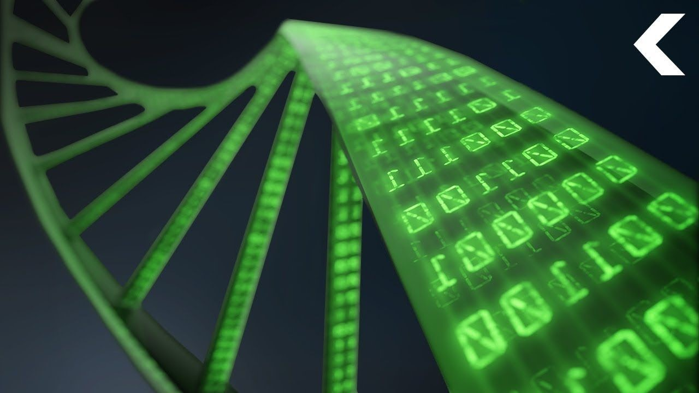

Биологические компьютеры - прорывная технология будущего
-
Биологические компьютеры - прорывная технология будущего
Технический университет Дании разработал новый тип "самовосстанавливающегося компьютерного процессора", который тестировался в американском космическом агентстве НАСА. Ян Мэдсен, профессор университета и руководитель исследований, говорит, что способность человеческого организма к самовосстановлению и особенности его процессов регенерации были для разработчиков ориентиром и источником вдохновения.
Новая технология получила неофициальное название "электронная ДНК". "Мы придумали новый тип компьютера, который не требует наличия специального центрального процессора. Вместо этого он работает с сетью небольших клеток, выполняющих роль процессора. Эти клетки получают сигналы от электронной ДНК на определенной частоте. Эти команды и выполняются в клетках, неся в себе определенные инструкции. Если одна из биологических клеток погибает, другие могут занять ее место", - говорит Мэдсен.
Ученый говорит, что их биологический компьютер не следует рассматривать как "неубиваемую машину", вместо этого его следует понимать, как решение, способное самовосстановиться после некоторого физического ущерба. Пока машина не восстановит утраченные клетки, их вычислительные функции будут выполнять другие. "Такой подход более надежен, чем традиционные ПК, когда вся большая система полагается на один или два ЦПУ", - говорит Мэдсен.